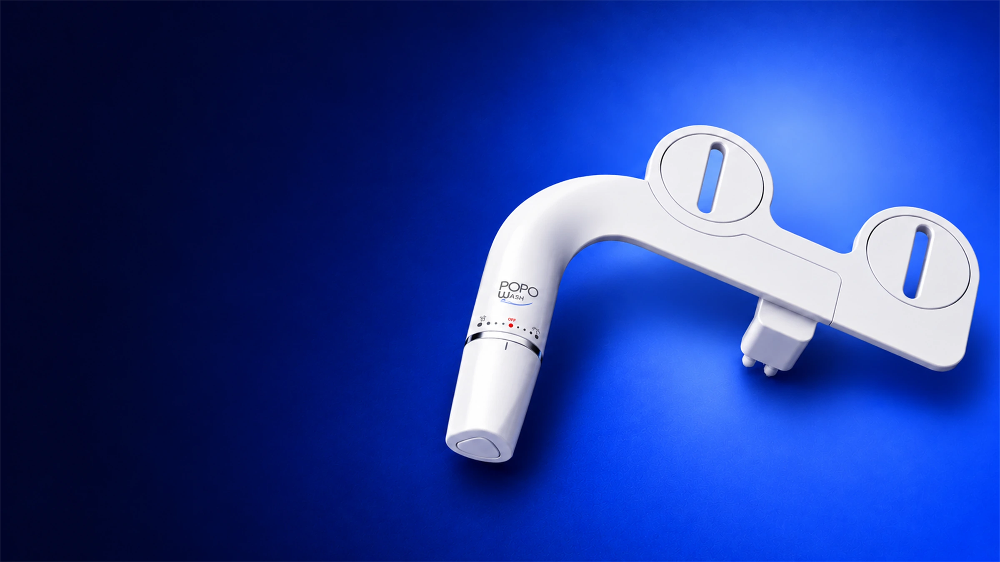
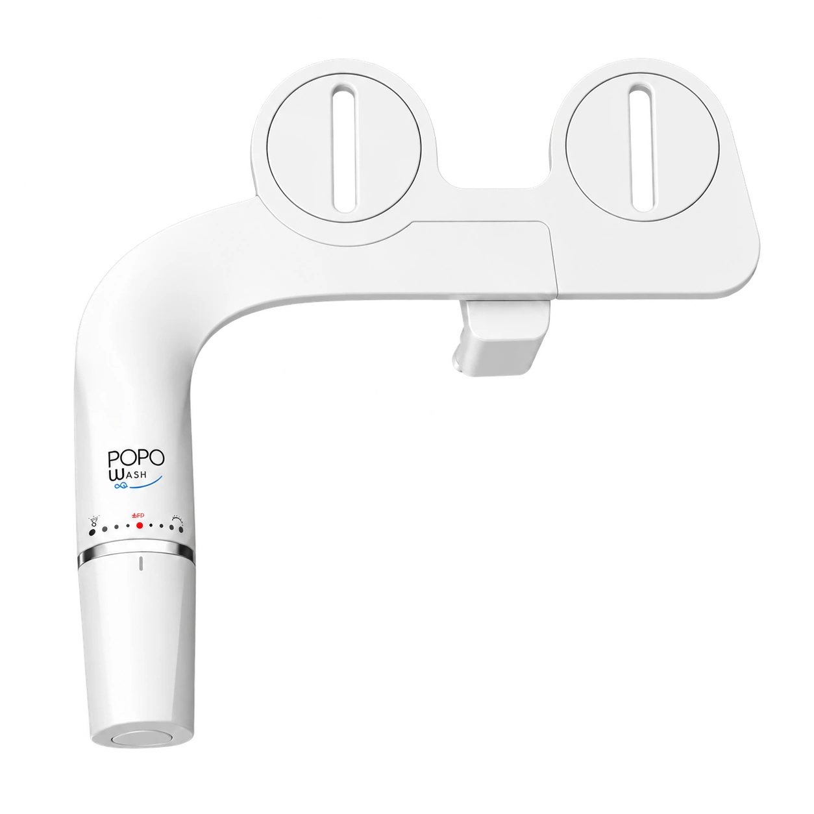

★★★★★
“Pensé que instalarlo iba a ser un cacho. Era mucho más simple.”
Instalación · Ejemplo de reseña
El bidet que lava con agua y se instala bajo el asiento de tu WC.


El bidet mecánico que suma agua a tu rutina. Gira, regula y usa un poco de papel para secar.
$39.990
Vista previa de compra. Disponibilidad por confirmar.
“Pensé que instalarlo iba a ser un cacho. Era mucho más simple.”
Instalación · Ejemplo de reseña

“Girar la perilla y sentir la diferencia. No vuelvo al puro papel.”
Uso diario · Ejemplo de reseña

“Ahora el papel es para secarme. El rollo dura mucho más.”
Menos papel · Ejemplo de reseña

PopoWash sí. En vez de frotar, restregar y repetir, limpia con agua justo donde más lo necesitas
Si no te limpias las manos con papel, ¿por qué tu poto sí?
Si quedaron huellas, no quedaste limpio.
Cierra la llave del agua, saca la tapa y el asiento, pon PopoWash debajo y vuelve a fijarlos. Conecta el agua, abre de a poco y revisa que no gotee.
Sentado (sí, sentado), gira la perilla de a poco y sube la presión hasta donde te acomode.
Vuelve la perilla a OFF y sécate con un poco de papel. El rollo pasa a actor secundario.
Paso 0 Tu tapa y tu asiento tienen que poder sacarse.
Paso 1 de 3
Agua para lavar. Papel para secar.
Cuéntanos cuántos viven en casa y calcula cuánto podrías ahorrar en papel.
Resolvamos las dudas antes de girar la perilla.
Contenido por confirmar. La lista definitiva de piezas, conexiones y manual se publicará antes de habilitar compras.
PopoWash se fija bajo el asiento, usando sus anclajes. Debes poder desmontar la tapa y el asiento para colocarlo y volver a fijarlos. Si no se pueden desmontar, no se puede instalar.
No. Es un bidet mecánico que funciona con la presión de tu suministro de agua, sin pilas ni electricidad.
Cierra la llave de agua y retira la tapa y el asiento. Coloca PopoWash sobre los anclajes, vuelve a fijar la tapa y el asiento, y conecta el suministro de agua. Abre la llave lentamente y comprueba que no existan fugas.
Este modelo mecánico no calienta el agua. Usa el agua de la conexión a la que está instalado, a la temperatura del suministro.
No necesariamente. La idea es usar agua para lavar y una pequeña cantidad de papel para secar. El consumo final depende de tus hábitos.
Estamos preparando el lanzamiento. PopoWash cuesta $39.990. El contenido de la caja se confirmará antes de habilitar las compras.
Más agua. Menos rollo.
Tu próxima visita al baño puede ser distinta.
$39.990 · Condiciones de compra por confirmar.